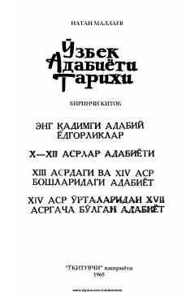

OAOʻzbek adabiyoti tarixining qadimiy davrlardan XVII asrgacha boʻlgan davrini yorituvchi darslik.
Ushbu darslik oʻzbek adabiyoti tarixining qadimiy davrlaridan to XVII asrgacha boʻlgan taraqqiyot bosqichlarini qamrab oladi. Kitobda adabiy yodgorliklar, mumtoz shoir va yozuvchilar ijodi hamda adabiy jarayonlar ilmiy tahlil qilingan.